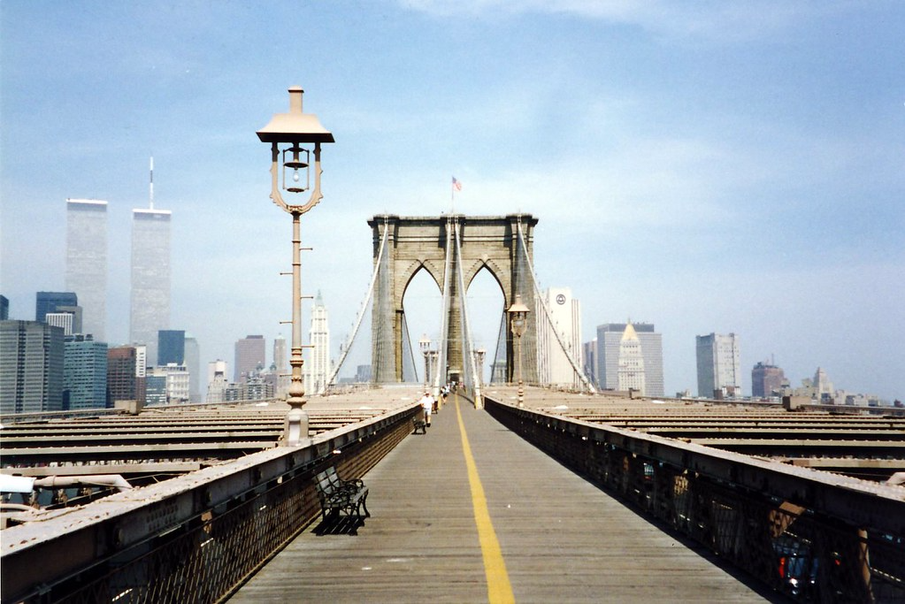
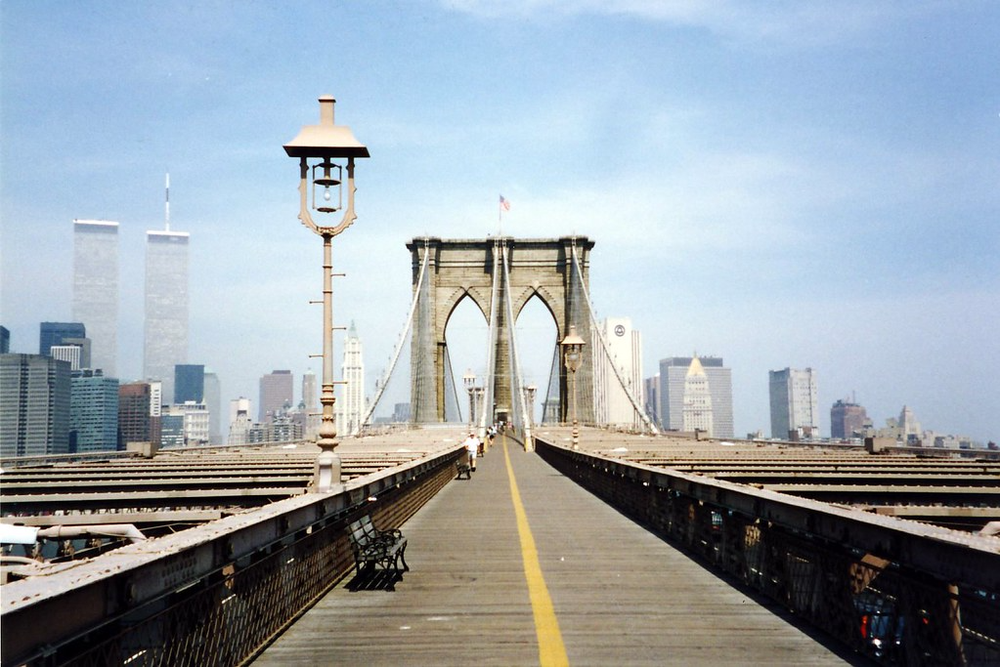

Attractions in New York
Surrounding Areas
I will be talking about what attractions there are in New York City as they are the biggest hot spots in where many people go and visit New York City. There are an uncountable number of attractions are they are close together while being a couple blocks away from each other, allowing for visitors to visit many places all at once. With the surrounding attractions, it is recommended to stay around 4 to 7 days as you would be able to see all the attractions around you and what is out there to do as there are many things that can be done that time should not be wasted! So when in New York, choose time wisely while picking which attractions you would want to go.
The Best Sights
These attractions are the symbols of New York City as there are many options between going inside and outside. Many of these include scenic views while also including a mind blown experience of not only the mix of city and urban life but also the scene of nature and serenity, giving balance among the two. These attractions are perfect for friends, family, couples, and a vast variety within the options of traveling and vacation. Each of then have a unique experience but also bring apart to the scenes and landscapes of New York City. While there are some places you may have to pay to enter, there are still many attractions that are budget friendly or free so you do not need to worry about finding attractions! There is so much to do!

 
